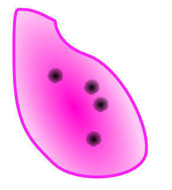
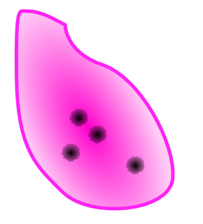
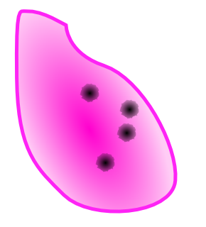

Chapter 1 アラスカのふたりNorthern Lights
- 1極北の町で/In a Remote Town
-
Information
- 55/75
- 5:00:00
Guide
指示通りに器具を使えば問題は無いと思われる。
骨の破片でCool判定を出すには
骨の破片を抜いてもCool判定が出ない場合、それは刺さっている方向に対して垂直に抜いていないからだ。抜いている途中でポインタがプルプル震えるのもダメなので、摘んだらそれなりの速度で一気にスパっと抜くのがコツ。
抜いた時点で判定は確定するので、トレイへの置き方や抜くまでの時間等は一切関係ない。
なお、これは後に出現するガラス片や骨の破片やライフル弾でCool判定を出すときも同様である。
Special Bonus
条件 倍率 MISS判定無し x1.4 【3分20秒/3分40秒/4分】以上残して手術終了 x1.1 MAX CHAIN【20/35/40】以上 x1.2 COOL判定【6/10/12】回以上取得 x1.3 Operation Rank
ランク Easy Normal Hard C ～2099 ～3899 ～4999 B 2100～2399 3900～4199 5000～5599 A 2400～2799 4200～4399 5600～5799 S 2800～ 4400～ 5800～5999 XS - - 6000～ for XS
COOL判定12回だが、COOLを出せる患部は13個しかない為、GOODが2回出た時点でXSを逃したことになる。特に破片でGOODが出やすいので、極力真っ直ぐに抜こう。
Movie
 Speedrun 2h49m7s part 1 of 16")
- 2モンゴメリ記念病院の風景/Montgomery Memorial
-
Information
- 99/99
- 5:00:00
Guide
このステージも解説が付くので問題は無いと思われる。
腫瘍の摘出でCool判定を出すには
腫瘍をピンセットで摘出した時にCool判定を出すには、エコーを確定させずに、腫瘍が見えない状態でメスを入れて、患部表面に出した後に処置すればCool判定が出る。
処置によるバイタルダメージ
まず、最初に処置する青い小さな腫瘍。これはレーザーで焼いた時にバイタルを少し減少させる。大きな腫瘍を摘出した後に大量に出現するので、調子に乗って焼くとバイタルがピンチになることが多いので注意する。
大きな腫瘍はドレーンで吸い出した後にメスで切り出すとバイタルを減少させる。大抵はこれを摘出しないと血だまりや膿が出現してしまうので、真っ先に摘出すべきだが、その際はバイタルを確認してから行おう。
Special Bonus
条件 倍率 MISS判定無し x1.4 【3分30秒/3分50秒/4分】以上残して手術終了 x1.1 MAX CHAIN【40/45/50】以上 x1.2 バイタルを【60/70/75】以下に下げない x1.3 Operation Rank
ランク Easy Normal Hard C ～2099 ～3799 ～4999 B 2100～2299 3800～4099 5000～5599 A 2300～2599 4100～4299 5600～5799 S 2600～ 4300～ 5800～5949 XS - - 5950～ for XS
バイタルを75以下にさえ下げなければ良い。青い小さい腫瘍と大きな腫瘍を処置する際のダメージに気をつければ難しくは無いと思われる。
Movie
- 3ブリザード/Snowstorm
-
Information
- 25/30
- 5:00:00
Process
- 外傷の処置
- 開胸
- 血だまりの除去
- ライフル弾の摘出
Guide
まずは外傷を処置する。裂傷を縫合した後、赤い楕円の形をした弾痕にピンセットで人口膜をかぶせてヒールゼリーを塗って定着させよう。無事に処置できたら開胸に移る。
心臓には大量の血だまりが発生しているので、まずはドレーンで全て吸い上げよう。
次にライフル弾の摘出を行う。青いガイドに沿ってメスを入れよう。無事に切ることができると血だまりが発生するのでドレーンで吸い上げる。そうするとライフル弾の破片が頭を覗かせるので、ピンセットで抜き取ろう。ライフル弾は長いので慎重に真っ直ぐ抜くこと。無事に抜くことができると再び血だまりが発生するのでドレーンで吸い上げる。
そして、もう一度同じ手順でライフル弾の破片を摘出する。この時バイタルの最大値が10にまで低下するので、ミスをしたらすぐにバイタルを回復して、慎重にライフル弾を摘出しよう。
無事に摘出し終えたら弾痕に人口膜をかぶせてゼリーで定着させる。最後にカウンターショックで蘇生して手術終了となる。
Special Bonus
条件 倍率 MISS判定無し x1.3 【3分40秒/4分10秒/4分20秒】以上残して手術終了 x1.3 カウンターショックの回数【4/3/2】回以下 x1.2 COOL判定【3/4/5】回以上取得 x1.2 Operation Rank
ランク Easy Normal Hard C ～1799 ～3199 ～4199 B 1800～1999 3200～3499 4200～4699 A 2000～2199 3500～3649 4700～4799 S 2200～ 3650～ 4800～4999 XS - - 5000～ for XS
カウンターショックを2回以下で終わらせなければいけない。それ以外は特に難しくは無い。
Movie
- 4救いの妖術/Sorcery of Salvation
-
Information
- 99/99
- 5:00:00
Process
- 開胸
- 出血をヒールゼリーで処置
- 制御チップを取り外して新しいチップを乗せる
- 大量に発生する血だまりを処理
- ある程度血だまりを吸うとイベント発生
- 最後の制御チップを乗せる
Guide
まず出血にゼリーを塗りたくって処置する。出血は放置すると血だまりとなってしまい、血だまりの周囲の患部を処置できなくなるだけでなく、バイタル減少量が増えてしまい、チェインも切れてしまう。余裕があったら処置しておこう。
次に全ての制御チップを停止させる。制御チップはレーザーを当てた後にメスを入れることでピンセットで取り外すことができるようになる。全て取り外すと新しい制御チップが用意されるので、今度はピンセットで乗せていく。
チップを3つ乗せた時点で大量の血だまりが発生する。ドレーンで血だまりを一つ吸うと血だまりが新たに発生する。さらにバイタルも減少してしまう。
血だまりを12個吸い上げるとイベントが発生するが、難易度によってはかなりバイタルが減らされてしまう。幸い、こちらが血だまりを吸わなければ、出血からの自然発生以外で血だまりは発生しないので、落ち着いてバイタルを回復してから再びドレーンで吸い上げよう。
イベント発生後は血だまりを全て処置して最後の制御チップを乗せれば手術終了。
超執刀について
このステージ以降、マーカス側でプレイした場合、1ステージ中に一度だけ超執刀を使うことができるようになる。
さらに執刀の心得4が出現するが、この練習ステージは必ずプレイしておくこと。いつでも超執刀を出せるようにしたい。
Special Bonus
条件 倍率 MISS判定無し x1.3 【3分40秒/4分/4分15秒】以上残して手術終了 x1.2 MAX CHAIN【30/40/45】以上 x1.2 血だまりの発生回数【30/20/18】回以下 x1.3 Operation Rank
ランク Easy Normal Hard C ～1699 ～2899 ～4299 B 1700～1799 2900～3199 4300～4699 A 1800～1899 3200～3399 4700～4999 S 1900～ 3400～ 5000～5199 XS - - 5200～ for XS
血だまりの発生回数が18回以下だが、まずチップを3つ載せた時点で6～7個出現する。そして、血だまりを吸う度に血だまりが出現し、12個の血だまりを吸うと超執刀が発動する。
ここで、条件が定かではないが、超執刀後にさらに血だまりを吸った場合、さらに血だまりが発生することがある。これが起きてしまうとXS取得は不可能になる。
Movie
- 5老いゆく病院/An Aging Hospital
-
Information
- 75/99
- 5:00:00
Process
- 開腹
- 炎症に消炎剤を投与
- エコーで腫瘍を探して摘出
- 全体を見渡せるようになる
- 全ての炎症と腫瘍を摘出
Guide
まずは炎症に消炎剤を投与していく。消炎剤を投与する場合、炎症に投与しても消炎剤が残っているようなら、注射器に補充せずそのまま次の炎症へ連続して投与することができる。
全ての炎症が消えたなら、今度はエコーで腫瘍を探し出して処置する。腫瘍は患部左と中央やや右上に存在する。
全ての腫瘍と炎症を処置するとルーペで患部をスクロールすることが出来るようになるので、同じように炎症を消炎剤で沈静化させて、エコーで腫瘍を探して摘出しよう。
全体を見渡せるようになるとバイタルの減少が激しくなるので、バイタルに常に気をつけること。特にエコー後に腫瘍を摘出する際はバイタルが大きく減らされてしまう。要注意。
Special Bonus
条件 倍率 MISS判定無し x1.3 【3分/3分10秒/3分15秒】以上残して手術終了 x1.2 MAX CHAIN【40/50/52】以上 x1.2 バイタルを【40/50/55】以下に下げない x1.3 Operation Rank
ランク Easy Normal Hard C ～2999 ～4799 ～5999 B 3000～3299 4800～4999 6000～6299 A 3300～3699 5000～5199 6300～6599 S 3700～ 5200～ 6600～6799 XS - - 6800～ for XS
バイタルの条件が55だが、こまめに回復していれば問題無いはず。最初の腫瘍に人工膜を乗せたらバイタルを全快にしてからゼリーで定着させよう。
Movie
- 6目覚める奇跡/Awakening
-
Information
- 45/65
- 5:00:00
Process
- 外傷を処置
- 開胸
- 内出血をエコーで探して処置する
- さらに4つの内出血を処置する
- イベント発生
- 新たに発生した傷を処置して終了
Guide
外傷を処置したらすぐに開胸へ。心臓表面にはいくつかの血だまりと内出血が発生している。
内出血はエコーで黒く表示され、メス入れると血だまりと裂傷ができる。これだけなら問題無いが、内出血を一定時間放置すると破裂してしまい大きな裂傷と血だまりを発生させ、バイタルを大きく減らしてしまう。
また、内出血はメスを入れて血だまりをドレーンで吸ったあとに放置すると、再出血してしまうが、この時も大きくバイタルが減少してしまう。そうならないように「メス→ドレーン→縫合」の流れで一つずつ処置しよう。
初期配置の4つの内出血を処置すると新たに4つの内出血が発生する。それらも処置するとイベントが発生。大量の裂傷と5つの内出血が発生するが、ヴァレリーの超執刀能力のおかげでバイタルが一切増減しなくなる。
全て処置すると手術終了となる。
初期の内出血
追加の内出血
心停止後に追加される内出血
内出血について
内出血は時間との勝負で、早めにメスを入れないと次々に破裂してしまってバイタルを大きく減らしてしまう。もし間に合わないと感じたらバイタル回復に専念するのがいいだろう。全ての破裂を確認してから、全体にゼリーを塗って出血ダメージを抑えつつ、一つ一つ手早く処置しよう。
ヴァレリーの超執刀
このステージ以降、ヴァレリー側でプレイした場合、1ステージ中に一度だけ超執刀を使うことができるようになる。
ヴァレリーの超執刀は発動してから効果が切れるまでバイタルの増減が行われなくなるというもの。とりあえず発動さえすればバイタルが0になることは無いので、その間に危険を取り除くことになるだろう。
Special Bonus
条件 倍率 MISS判定無し x1.3 【3分/3分30秒/3分40秒】以上残して手術終了 x1.2 MAX CHAIN【50/65/70】以上 x1.2 心臓破裂回数【6/4/2】回以下 x1.3 Operation Rank
ランク Easy Normal Hard C ～4599 ～5899 ～7399 B 4600～4999 5900～6199 7400～7699 A 5000～5199 6200～6499 7700～7999 S 5200～ 6500～ 8000～8099 XS - - 8100～ for XS
心臓破裂回数が2回以下なので、内出血の場所を覚えよう。内出血を切り出す際はバイタルが8減少するので、予め回復しておくこと。
Movie
 Speedrun 2h49m7s part 2 of 16")
- » Chapter 2